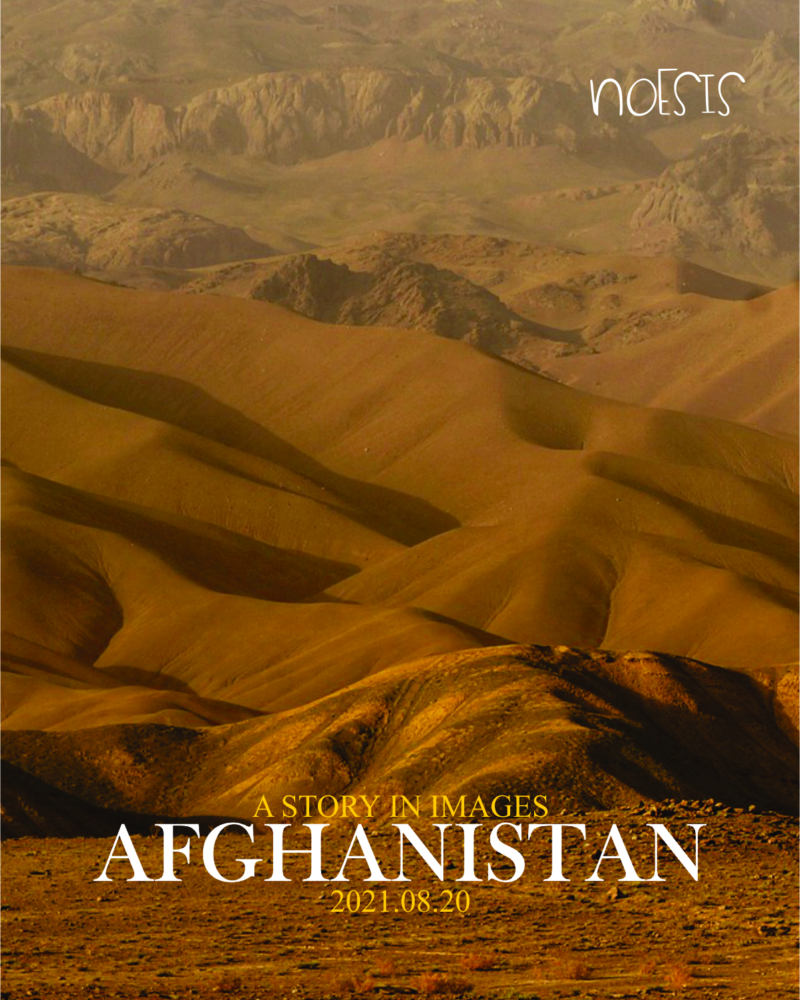
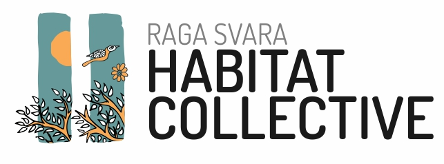

Mohit's Notes
Table of Contents
September 2021
Beginning Roberto Bolaño

The greatest writer of the 20th century, if not all time, for me, is Jorge Luis Borges. And if one reads Borges, he must also read Roberto Bolaño. I haven't read Bolaño before and I am starting with 2666. A serendipitous start with this quote in the book's opening:
An oasis of horror in a desert of boredom.
-Charles Baudelaire
And Baudelaire reminds me that I must return to Fleurs du Mal soon again. Just what I needed to start the day!
Happy Teachers' Day
I wrote this sometime back. Resharing on the occasion of Teachers' Day in India.
What, then, is truth? A mobile army of metaphors, metonyms, and anthropomorphisms – in short, a sum of human relations, which have been enhanced, transposed, and embellished poetically and rhetorically, and which after long use seem firm, canonical, and obligatory to a people: truths are illusions about which one has forgotten that this is what they are; metaphors which are worn out and without sensuous power; coins which have lost their pictures and now matter only as metal, no longer as coins.
-Friedrich Nietzsche
I will address two points in this piece. First is plain and obvious, needing no additional mention by me; however, repetition has its value. The second is more important of the two and would perhaps be useful to teachers who harbour a need for validation or find value in their profession primarily through being agents of change in a student's life.
The institution of schooling has been put under question since beginning of the enterprise. The latest bout has been during the lock-down due to COVID-19. It is not rare to see parents and others putting in to question the role and value of schools and by extension teachers. There is curious dichotomy in the perception of teaching as a profession. While we never miss an opportunity to provide lip service to the "greatness" and "nobility" of the teacher, the incentive structures governing an educational enterprise, and teachers therein, betray a different story. It is not hard to see why many teachers feel some sort of sacrifice being made on their part by their choice of being a teacher. While it is a praiseworthy choice, it cannot ensure good, competent people enter the field. There is only so much we can achieve by relying solely on sacrificial offerings by noble citizens. Like Nietzsche suggests, let us not take the "greatness" of teachers as given. What precise and important role do teachers play in the educational enterprise?
It is common to see memes or rants on how an individual's schooling experience was useless or impractical. The culture, systems and teachers in a school determine the student experience. While there may be some truth to the experience of irrelevance that a student may feel, it would be wrong to place the blame on the school as a concept. It is intellectually lazy to say that schools are disconnected from the "real world". I believe that schools are at an arm's length from reality by design. Schools provide an abstraction of real world, minus its brutality. How else can you prepare kids for the real world? The question is one of fidelity. How "real" can the real world be made within the classroom? The scoping and constraints of real-world problems must be carefully planned; what Dewey called a "planned experience". The key elements of the experience that students are likely to get outside have to be scoped and the key variables tinkered with. Learning is a construction of meaning. The better our theories of reality, the better we are able to act in the real world.
Lev Vygotsky had suggested that social participation facilitated by language and dialogue, with symbolically mediated thought, is important for learning. This symbolic mediation happens primarily through teachers and through other tools at students' disposal. What a person learns is not simply an accumulation of knowledge, but active modification of the psychological structure of the person. Teaching and learning, though embedded in a social reality, are, at its core, solitary experiences. That might sound counter-intuitive. The very reason for existence of schools is to provide social experience. I fully endorse that. The initiation and sustenance of the solitary experience is embedded in the social experience. Kids map their individual experience on the familiar grid of routines and structures provided by the school and teachers. Good teachers burden themselves with the thought that they are solely responsible for a student's learning or future. I believe that we need to give the agency and acknowledgement of student's own contribution to learning. A student herself has to undertake the reflective thinking that forms the foundation of deep learning. Students are navigating their internal world. We are fortunate that we get to be a part of the world-building that students are doing. Our role is to ensure that we provide them the conditions and tools to build a complex, interconnected internal world. It is not a failure if the world that they have built does not feature us. Our presence is still there in the ways of their thinking. That is more than enough. We do our jobs in the present and the many wonders it provides us now. Right now.
Lutheran Insulter
Fabulous! Go here for some exquisite insults.
https://ergofabulous.org/luther/
Quotes on education
Richard Rorty
Rorty presents knowledge, not as a representation of the real world or a “match” between knowledge and reality, but rather as a collection of conceptual structures that are adapted, or viable, within a person's range of experience. In other words, the person's knowledge “fits” with the world, much like how a key fits a lock (Bodner, 1986). Each of us builds our own key by making sense of the world, and many different keys can open a given lock.
Hermann Hesse
A Game Master or teacher who was primarily concerned with being close enough to the 'innermost meaning' would be a very bad teacher. To be candid, I myself, for example, have never in my life said a word to my pupils about the 'meaning' of music; if there is one, it does not need my explanations. On the other I have always made a great point of having my pupils count their eighths and sixteenths nicely. Whatever you become, teacher, scholar, or musician, have respect for the 'meaning,' but do not imagine that it can be taught. Once upon a time the philosophers of history ruined half of world history with their efforts to teach such 'meaning'; they inaugurated the Age of the Feuilleton and are partly to blame for quantities of spilled blood. If I were introducing pupils to Homer or Greek tragedy, say, I would also not try to tell them that the poetry is one of the manifestations of the divine, but would endeavor to make the poetry accessible to them by imparting a precise knowledge of its linguistic and metrical strategies. The task of the teacher and scholar is to study means, cultivate tradition, and preserve the purity of methods, not to deal in incommunicable experiences which are reserved to the elect – who often enough pay a high price for this privilege."
See also On Schools [2021-07-05 Mon]
August 2021
Noesis | Afghanistan: A Story in Images

We are witnessing a crisis unfold in our time. I grew up in the 90s and remember the night of September 11, 2001. Disbelief, disorientation. I was too young to understand what led to it and what followed. I will be exploring the beautiful, tragic, complex and tumultuous past and present of Afghanistan through images. I am no expert in Afghan history or IR or geopolitics. We will only look at images and wonder about the reasons and costs of war.
Thinking about thinking
As an educator, one of the key ideas that I explore is thinking. One of the goals to start Noesis, my philosophy class at The Northstar School, was to learn and teach the process of thinking with students and educators. I used to say that learning the process of thinking is an extremely important skill. I still believe that. My primary influence in this regard has been John Dewey. In his book How We Think, he writes
We may recapitulate by saying that the origin of thinking is some perplexity, confusion, or doubt. Thinking is not a case of spontaneous combustion; it does not occur just on "general principles." There is something specific which occasions and evokes it. General appeals to a child (or to a grown-up) to think, irrespective of the existence in his own experience of some difficulty that troubles him and disturbs his equilibrium, are as futile as advice to lift himself by his boot-straps.
How do we create the "boundary" conditions of perplexity, confusion, and doubt? We think of thinking as a natural, automatic process. As per Dewey thinking does not occur with mere exhortations to "think".
Dewey further clarifies,
Given a genuine difficulty and a reasonable amount of analogous experience to draw upon, the difference, par excellence, between good and bad thinking is found at this point. The easiest way is to accept any suggestion that seems plausible and thereby bring to an end the condition of mental uneasiness. Reflective thinking is always more or less troublesome because it involves overcoming the inertia that inclines one to accept suggestions at their face value; it involves willingness to endure a condition of mental unrest and disturbance. Reflective thinking, in short, means judgement suspended during further inquiry; and suspense is likely to be somewhat painful. As we shall see later, the most important factor in the training of good mental habits consists in acquiring the attitude of suspended conclusion…
Good thinking always follows and results in "uneasy' and "painful" experience. That is very important to understand and remember. Taking the easiest and the first suggestion that comes up seems bad thinking. Suspending conclusion until further inquiry also leads to uneasiness but is important for good thinking.
We have some inkling on what is good thinking process. However, of late I have been thinking whether just the process of thinking is enough?
Dewey, a great proponent of progressivism in education, does not talk about "what" to think.
Theodore Brameld said,
Progressivism is strong in scientific method: weak in concerns for the concrete and comprehensive outcome of that method. Strong in teaching as how to think, weak in teaching as what to think for. Strong in encouraging active intelligence; weak in estimating and counteracting those forces and restrictions as block its effective operation. Strong in encouraging individual self-expression and individual action; weak in integrating these successfully, powerfully with group self-expression and group action. String in tolerance towards varying beliefs; weak in conviction to needed positive beliefs…Strong in believing that present and important and real; weak in believing that the future is equally important and real. Strong in delineating the complexities and pluralities of experience; weak in fusing these into comprehensive, appealing, purposeful designs. In short progressivism is strong in all the ways liberalism is strong; weak in all ways liberalism is weak."
The more I teach and discuss in my classes, the more I keep feeling that teaching how to think is not enough. There must be a space for talking about what to think. Neither is enough on its own. Of course the "what" part is the designed curriculum. Of late, I have seen a shift in talking about just the "how" of thinking and developing skills with less concern about the content or the object of that thinking.
Walk in the Northstar Campus

New leaves in this young Kassod on the campus. We are in peak monsoon right now. It normally flowers after monsoon until December. The flowers are yellow and look quite pretty in bunches.

The canopy is not quite shapely yet. It's still young.

This is Agave Americana and it has started flowering. The central spike is about 4 ft right now but it will go much much higher. It will flower in the most incredible way which is difficult describe. This stalk will probably go as high as 20 ft or more. It will produce beautiful bunches of yellow flowers. I will share more photos when is blooms. Once it has flowered, the plant will die. It only flowers once in its life.
The Ones Who Walk Away From Omelas - Ursula K. Le Guin
We will be reading a short story by Ursula Le Guin. She is one of the greatest Scifi writers (and one of my favourites). This short story, The Ones Who Walk Away From Omelas, presents a moral dilemma.
Ursula Le Guin shows a city; full of happy people; people without bondage and guilt; dancing in carnivals under bright, clear skies. Their perfect lives have just one condition: a single child tortured indefinitely. Ivan Karamazov, in Dostoevsky’s The Brothers Karamazov, wonders about the morality of creating “a fabric of human destiny” to make all men happy, giving them peace, but with the condition that one innocent creature be tortured. Ivan asks his brother if he would be the “architect” of such a world? The same question was posed in the 19th century by William James, the American philosopher. He asked what if we were offered the world with millions of permanently happy souls with just one condition of a lonely torment inflicted upon “a certain lost soul?”
What about this moral dilemma makes us return to it repeatedly? What inner demons does it represent? One way to think about it is through the lens of John Stuart Mill’s utilitarianism. Put simply; our goal as society must be to ensure the greatest good of the greatest number of people. While it does instinctively “feel” wrong to torture a child for the happiness or benefit of others, it is important that we have a consistent way to think about it before coming to a position. How should we act in a morally consistent way? For as long as we live with each other, we will be faced with moral choices. Let us begin with the hypothesis that any action that leads to a greater good at the expense of lesser evil is morally correct. Consider, for example, eating your food. Would it be a morally wrong choice to eat, as there is a possibility that there were instances of suffering in producing the food, transporting it, preparing it, so on and so forth? Should that lead to you abstaining from eating? (I am making no references to eating meat or otherwise. The very act of eating involves suffering on someone or something’s part, whether more or less.) Perhaps not. So then, do we conclude that torturing the child is an acceptable trade-off? Would that be morally correct? Saint Thomas Aquinas argued that killing one’s assailant is justified provided one does not intend to kill him. At this point, we enter a room of mirrors. The terrain of this moral field is deeply troubling. We have in the past followed the doctrine of “double effect” (as did Aquinas). This doctrine explains the permissibility of an action that causes a serious harm as a side effect of promoting some good end. Do we accept the negative double effect, of the unspeakable torture being inflicted upon the child, as acceptable? Would Aquinas have assented to this?
There is a morally consistent way out of this mire. The key question here is one of “agency”. Moral philosophers speak about harmful direct agency and harmful indirect agency. Through harmful indirect agency, harm comes to some victims in order to achieve a good, but “nothing in that way is intended for the victims.” In harmful direct agency “harm comes to some victims from the agent’s deliberately involving them in something in order to further his purpose.” It is evident that condemning a child to torture for others to survive constitutes harmful direct agency. Agreeing to this bargain means that we are deliberately causing harm to further own purposes. This choice is not a pardonable harmful indirect agency. We cannot live with a clear conscience.
William James alluded to the fallibility of human nature when he wrote that an impulse may arise within us “to clutch at the happiness so afforded” and “how hideous would be its enjoyment”. It is better to walk into the sunset, hand in hand.
July 2021
Raga Svara Habitat Collective

Aristotle said something to the effect that nature has made all things specifically for the sake of man and that the value of non-human thing in nature is merely instrumental. This line of thinking troubles me. And, it continues till this day. The inherent drive for dominion of man over nature. It is not just Aristotle, although he seems to be foremost in a long line of similar thought. Genesis 1: 27–8 states: And God blessed them, and God said unto them, Be fruitful, and multiply, and replenish the earth, and subdue it: and have dominion over fish of the sea, and over fowl of the air, and over every living thing that moveth upon the earth.” Thomas Aquinas, being the great follower of Aristotle, shares his view that non-human animals are “ordered to man’s use”.
What do we do to blunt, if not reverse, this "arrogance of anthropocentrism"?
Habitat Collective is an initiative that we are starting at Raga Svara to think about, understand and take action on this issue. Like Raga Svara, Habitat Collective is an evolving idea. It opens up opportunities to take the Raga philosophy to areas outside of Raga, in to the world. We all know the importance of understanding and maintaining healthy habitats. At Raga our goal is, first, to understand and maintain a healthy body and mind. However, we cannot separate ourselves from our habitats. A healthy habitat is essential.
Habitat Collective is a shared space for thought and action. Understanding the interconnectedness and interdependences of ecosystems. Our goal is to experience the interactions between individual organisms and their environments. By experience I mean deep embodied experience. Experience you get while walking with naked feet on a seashore, or when seeing the stunning blue sky of the mountains, or breathing clear cold air of the forests. It is a community undertaking, driven by naturalists, conservationists, environment scientists, volunteers and everyone who loves our natural world.
Thinking about questions such as: Should we reduce usage of resources and conserve environment because a sustainable environment is essential to human well-being? Or is such behaviour also wrong because the natural environment has certain values in their own right and they must be respected and protected in any case. Does our habitat have any intrinsic value or merely instrumental value? To me, thinking about this is as important as taking action.
Habitat Collective creates an environment to think about ethical, and even aesthetic, responses to nature. Our goal is thoughtful action in conservation of biodiversity and conversation of environmental ethics.
–—

June 2021
On Method
कबीरा कुआँ एक है,
पानी भरे अनेक
भांडे ही में भेद है,
पानी सब में एक
-Kabir
O Kabir, there is but one well And many who draw Difference is the vessel Water stays the same. (my poor translation)
Hermann Hesse, like Kabir, is one of those writers who can convey deep ideas with incredibly lucid writing. The Glass Bead Game is an exploration of many ideas. I was piqued by one on method.
Father Jacobus, the great historian of the Benedictine Order, is talking to Joseph Knetch, the young prodigy. Father Jacobus is bemoaning the condition of historiographical scholarship and says this:
Every science is, among other things, a method of ordering, simplifying, making the indigestible digestible for the mind. We think we have recognized a few laws in history and try to apply them to our investigations of historical truth. Suppose an anatomist is dissecting a body. He does not confront wholly surprising discoveries. Rather, he finds beneath the epidermis a congeries of organs, muscles, tendons, and bones which generally conform to a pattern he has brought to his work. But if the anatomist sees nothing but his pattern, and ignores the unique, individual reality of his object, then he is a Castalian, a Glass Bead Game player; he is using mathematics on the least appropriate object. I have no quarrel with the student of history who brings to his work a touchingly childish, innocent faith in the power of our minds and our methods to order reality; but first and foremost he must respect the incomprehensible truth, reality, and uniqueness of events. Studying history, my friend, is no joke and no irresponsible game. To study history one must know in advance that one is attempting something fundamentally impossible, yet necessary and highly important. To study history means submitting to chaos and nevertheless retaining faith in order and meaning. It is a very serious task, young man, and possibly a tragic one.
Only Hesse could write with this clarity, a concept so rich and deep. Let me try to understand it.
Inquiry
Every science is, among other things, a method of ordering, simplifying, making the indigestible digestible for the mind.
About a decade ago, I suffered from "rationalism" of the highest order. I do not think highly of my intellect of that age. I was too easily swayed by the appeal of empirical science and my deep apprehension with everything popular played a part, perhaps more so. In the middle of all quackery and illogical idiocy that I felt surrounded by, I resorted to the other extreme.
Even as I write this, I feel a danger of being clubbed with some sort of anti-science league. Nothing could be further form the truth. I am not articulate enough to explain my position. So let me quote Freirdrich Hayek, the preeminent economist of the 20th century.
In his book, the "Counter Revolution of Science", he says:
In the course of its slow development in the eighteenth and early nineteenth centuries the study of economic and social phenomena was guided in the choice of its methods in the main by the nature of the problems it had to face. It gradually developed a technique appropriate to these problems without much reflection on the character of the methods or on their relation to that of other disciplines of knowledge….The term "science" had not yet assumed the special narrow meaning it has today, nor was there any distinction made which singled out the physical or natural sciences and attributed to them a special dignity. Those who devoted themselves to those fields indeed readily chose the designation of philosophy when they were concerned with the more general aspects of their problems…
During the first half of the nineteenth century a new attitude made its appearance. The term science came more and more to be confined to the physical and biological disciplines which at the same time began to claim for themselves a special rigorousness and certainty which distinguished them from all others. Their success was such that they soon came to exercise an extraordinary fascination on those working in other fields, who rapidly began to imitate their teaching and vocabulary. Thus the tyranny commenced which the methods and technique of the Sciences in the narrow sense of the term have ever since exercised over the other subjects…
And, although in the hundred and twenty years or so, during which this ambition to imitate Science in its methods rather than its spirit has now dominated social studies, it has contributed scarcely anything to our understanding of social phenomena…
I shared similar thoughts in Porosity of Boundaries
To think that modern science is not riddled with fallacies of inductive logic would simply show that one does not understand the very foundations on which it rests. The analytical tools and objectivity, the foundations of modern science, itself rest on historical paradigms and strategies of inquiry that are effective only within a specific milieu.
Coming back to Father Jacobus, what I understand from his thoughts, on a meta level, is that we must attempt to understand the underlying methods of any field of inquiry, whether it be history or science or any other.
Individuality
We think we have recognized a few laws in history and try to apply them to our investigations of historical truth. Suppose an anatomist is dissecting a body. He does not confront wholly surprising discoveries. Rather, he finds beneath the epidermis a congeries of organs, muscles, tendons, and bones which generally conform to a pattern he has brought to his work. But if the anatomist sees nothing but his pattern, and ignores the unique, individual reality of his object, then he is a Castalian, a Glass Bead Game player; he is using mathematics on the least appropriate object.
This has been my experience with the reductive approach of "scientific" method applied to quintessentially "human" problems. The quantophrenia, the data driven approach to human well-being, the averaging out of human qualities. The methods of one system or category cannot, and must not, be applied wholesale to other categories.
Tragic beauty
I have no quarrel with the student of history who brings to his work a touchingly childish, innocent faith in the power of our minds and our methods to order reality; but first and foremost he must respect the incomprehensible truth, reality, and uniqueness of events. Studying history, my friend, is no joke and no irresponsible game. To study history one must know in advance that one is attempting something fundamentally impossible, yet necessary and highly important. To study history means submitting to chaos and nevertheless retaining faith in order and meaning. It is a very serious task, young man, and possibly a tragic one.
And I get back to the sublime writing of Hesse. "The incomprehensible truth, reality, uniqueness of events" is equally true of individuals. In trying to understand an entity as complex as a person (or even a system), I must be humble enough to accept, at the outset, that I am trying something fundamentally impossible. And this is the tragic and beautiful fact of my life.
On Schools
What, then, is truth? A mobile army of metaphors, metonyms, and anthropomorphisms – in short, a sum of human relations, which have been enhanced, transposed, and embellished poetically and rhetorically, and which after long use seem firm, canonical, and obligatory to a people: truths are illusions about which one has forgotten that this is what they are; metaphors which are worn out and without sensuous power; coins which have lost their pictures and now matter only as metal, no longer as coins.
-Friedrich Nietzsche
I will address two points in this piece. First is plain and obvious, needing no additional mention by me; however, repetition has its value. The second is more important of the two and would perhaps be useful to teachers who harbour a need for validation or find value in their profession primarily through being agents of change in a student's life.
The institution of schooling has been put under question since beginning of the enterprise. The latest bout has been during the lock-down due to COVID-19. It is not rare to see parents and others putting in to question the role and value of schools and by extension teachers. There is curious dichotomy in the perception of teaching as a profession. While we never miss an opportunity to provide lip service to the "greatness" and "nobility" of the teacher, the incentive structures governing an educational enterprise, and teachers therein, betray a different story. It is not hard to see why many teachers feel some sort of sacrifice being made on their part by their choice of being a teacher. While it is a praiseworthy choice, it cannot ensure good, competent people enter the field. There is only so much we can achieve by relying solely on sacrificial offerings by noble citizens. Like Nietzsche suggests, let us not take the "greatness" of teachers as given. What precise and important role do teachers play in the educational enterprise?
It is common to see memes or rants on how an individual's schooling experience was useless or impractical. The culture, systems and teachers in a school determine the student experience. While there may be some truth to the experience of irrelevance that a student may feel, it would be wrong to place the blame on the school as a concept. It is intellectually lazy to say that schools are disconnected from the "real world". I believe that schools are at an arm's length from reality by design. Schools provide an abstraction of real world, minus its brutality. How else can you prepare kids for the real world? The question is one of fidelity. How "real" can the real world be made within the classroom? The scoping and constraints of real-world problems must be carefully planned; what Dewey called a "planned experience". The key elements of the experience that students are likely to get outside have to be scoped and the key variables tinkered with. Learning is a construction of meaning. The better our theories of reality, the better we are able to act in the real world.
Lev Vygotsky had suggested that social participation facilitated by language and dialogue, with symbolically mediated thought, is important for learning. This symbolic mediation happens primarily through teachers and through other tools at students' disposal. What a person learns is not simply an accumulation of knowledge, but active modification of the psychological structure of the person. Teaching and learning, though embedded in a social reality, are, at its core, solitary experiences. That might sound counter-intuitive. The very reason for existence of schools is to provide social experience. I fully endorse that. The initiation and sustenance of the solitary experience is embedded in the social experience. Kids map their individual experience on the familiar grid of routines and structures provided by the school and teachers. Good teachers burden themselves with the thought that they are solely responsible for a student's learning or future. I believe that we need to give the agency and acknowledgment of student's own contribution to learning. A student herself has to undertake the reflective thinking that forms the foundation of deep learning. Students are navigating their internal world. We are fortunate that we get to be a part of the world-building that students are doing. Our role is to ensure that we provide them the conditions and tools to build a complex, interconnected internal world. It is not a failure if the world that they have built does not feature us. Our presence is still there in the ways of their thinking. That is more than enough. We do our jobs in the present and the many wonders it provides us now. Right now.
See also Quotes on education [2021-09-03 Fri]
May 2021
Porosity of Boundaries
One major objective for Raga Svara is to create, what I call, “Porosity of Boundaries”. I want to make the solid walls between apparently different ideas more porous, more accommodating. One such boundary is between western medicine and our traditional medicine. I have thought for quite sometime about Indian traditional systems, whether therapeutic or belief systems (many times they merge seamlessly) and their place in Raga Svara.
Ayurveda (perhaps the most popular among our traditional medicine systems) is loved and trusted by many. At the same time it is derided by many for its lack of evidence based research to support its claims. Ayurveda is, unfortunately, a victim of many babas and their companies who make extraordinary claims to dupe gullible people (here, here). Many rationalists are rightly on guard against all claims made by traditional systems.
Of late, there has been a new trend of providing legitimacy to traditional medicine by using the epistemic frameworks of modern science. Using, mostly callously, concepts like "evidence based", "clinical trials", etc. the quack tries to pass off as a scientist.
I believe that the fundamental issue here is of "epistemic categories". Ayurveda, or for that matter any conceptual category, needs to be evaluated within the dynamics of discourse in which they operate. It would be futile, and even misleading, to transpose one system's internal dynamics to another system to evaluate it. An honest, and perhaps more useful, approach would be to evaluate Ayurveda within its own framework defined by its first principles and givens. The same goes with modern medicine. To think that modern science is not riddled with fallacies of inductive logic would simply show that one does not understand the very foundations on which it rests. The analytical tools and objectivity, the foundations of modern science, itself rest on historical paradigms and strategies of inquiry that are effective only within a specific milieu.
Personally, it has been a humbling experience for me to be able to see "categories" as internally consistent while being utterly shamanic when seen from another lens.
As individuals all we can do is to be clear and honest within our own minds about the limitations of each system. What I find difficult to accept and understand is the parasitic attempt to gain epistemic legitimacy. And this works both ways. Some Ayurveda proponents will claim "scientifically proven", "clinically tested" to sell their products and some"modern", synthetic products will claim to be "natural".
All said and done, each system must pass a falsifiability screen. We cannot accept unsound arguments even if they are internally consistent. And there exist methods that must be employed in evaluation of any system. Unfortunately, Ayurveda (and other traditional systems such Siddha, Unani et al.) is neither making enough attempts to develop its own proof mechanisms nor is it adopting proof mechanisms of other systems (such as clinical trials of modern science) in its true spirit.
Tambourine Man
Today, 25th May, is Bob Dylan's birthday. Remembering days from the past and how Dylan got entangled in my memories.
I had never been on a road trip with friends. It was December of 2007. We were going from Cambridge to Motherwell, near Glasgow. It was not a vacation trip. We were going for an on-site project. I hadn't travelled much in the UK. We were in Cambridge University's van. I didn't drive since I had no license and no confidence. I was the navigator for a while perhaps. I don't remember much. It was overcast, I don't remember if it rained. What I remember is what I felt and what I heard. I heard Bob Dylan for the first time. I had heard of Dylan and heard some of his songs, in the passing, earlier may be. But I "listened" to him for the first time in that trip. And Dylan played for a long time. I was coming from Pink Floyd and this sound, this folksy, raw sound was new. But it was soothing. The harmonica played on. I must have wondered about my own life when he sang:
How does it feel, how does it feel? To be without a home Like a complete unknown, Like a rolling stone…
But what I remember the most is Mr Tambourine Man. Sitting in the back seat, watching out of the window, drizzling outside, and unending highways. And Tambourine Man:
Hey, Mr. Tambourine Man, play a song for me I'm not sleepy and there is no place I'm going to Hey, Mr. Tambourine Man, play a song for me In the jingle jangle morning I'll come following you…

On the love of monospace fonts
I think good fonts can elevate a design and bad fonts do the opposite. As a reader my most intimate relationship is with print. The curves, the spacing, serif or sans, everything comes together to create a character of the graphemes. Over the years I have liked (and then stopped linking) many fonts. I'm listing some of my current favourites.
Proportional Fonts
This is the type of font that you would see most often (almost always). Proportional or variable width fonts are probably easier on the eye and are made possible by modern computers. You would probably have not noticed that the width of each letter and the spacing between each letter is not the same (this very text that you are reading right now!). I like these proportional fonts:
Mono Fonts
Mono or monospaced fonts may remind you of the good old days of the typewriter. In modern times, these are fairly common in IDEs and programming/coding in general. I got to love mono fonts when I started using Emacs about a year ago. When my Emacs Orgmode calendar was throwing up alignment errors, I had no idea what was causing the problem. Until, quite accidentally, I was trying out different fonts and stumbled upon a mono font which magically fixed it. I have loved mono fonts since then. My current favourites are:
Fira Mono
Source Code Pro
Ubuntu Mono
Apart from my personal relationship with manuscript, I also design curriculum and learning experiences for preschool kids. These kids are just beginning to control their fine motors muscles of fingers and forearm (required for pincer grip holding of a writing tool). We gave incredible amount of time in deciding what fonts (manuscript) should the kids be taught. Now this might seem like a pretty banal thing to think about. But its really not. Just think about why you write a certain letter in a certain way. Why is your 'f' different from some one else's 'f' and so on with all letters? After quite some thought, we finalised on Zaner Bloser manuscript. The strokes are neat and sharp. The closed cups of 'b' and 'd' are same as open cups of 'c' and 'e' and so on.
Its quite fascinating to think about fonts.
Hercules Globular Cluster
So I had stopped photographing the skies for some months. I was not getting to a point of clicking any photos, let alone getting good ones. I simply couldn't set up the gear properly. Astrophotography is highly technical requiring complex and sensitive equipment and some very quaint softwares which seem like they were made in late 90s. For every imaging session, it takes me about an hour of setup time. It takes me another 2 hours or for image capture. I have no idea how the image is going to come out until the next day when I process it. I was procrastinating for a very long time since I knew I was going to make a mistake and botch up the setup leading to no images.
Hercules Globular Cluster, is a globular cluster of several hundred thousand stars in the constellation of Hercules. Hercules cluster is 25,890 light years away and contains an estimated 300,000 individual stars. Carl Sagan and Frank Drake sent a message to the Hercules Cluster using the Arecibo Radio Telescope in in 1974. So, if all go well, we should hear back in 50,000 years :)

Figure 9: Photographed on 10th May 2021 from Rajkot (India).
Sirius
With the incredibly light polluted city of Rajkot, I continue to fail at getting any sort of deep sky objects. More than 50% moon brightness added to my misery. Even with new moon, I barely manage to see anything below 35 degree altitude. Light pollution is the least talked about perhaps. The maddening LED hoardings blinding the eye at signals, uplighters on buildings, random spotlights during events, and much more.
Anyway, here's a half ridiculous image of Sirius, before I gave up for the night (after 2 hours of dawdling about).
The brightest star in our sky, Sirius is the first star I point to for alignment (after North Star, of course, for polar alignment). It is sad that Sirius, along with Capella and perhaps Mirfak, are themselves never observed or photographed. Just gently helping us find our way to other more "worthy" deep sky objects.
The alpha star of Canis Major, is a binary star about 25 times as bright as the sun. The rising of Sirius in the east at dawn marks the arrival of "dog days", the unbearable scorching summer.

Orion Nebula
I have been wanting to combine my interests in astronomy and photography by exploring deep sky imaging. I have spent many hours getting this first image of Orion Nebula. This is a diffuse nebula in the Orion constellation. It is about 1500 light years away. About 700 new stars are being formed in the gases of this nebula. How incredible that I can see this nursery of stars from our planet. Photographed from highly light polluted city of Rajkot.
This was my first AP target.

Figure 11: My first capture of M42 Orion Nebula
Pleiades
Our lives are illuminated; sparsely, dimly. Just like pin points of starlight in the maddening blackness of the universe. Sometimes on a winter's night, it can be achingly beautiful.
The Seven Sisters, or the Pleiades, is an open star cluster in Taurus. Known as Parvin in Urdu and Krittika in Hindi, these are hot blue luminous stars embedded in a hazy reflection nebula. Mostly 7 stars are visible to the naked eye. When Galileo saw it through a telescope, he found that there are many more stars in the cluster.